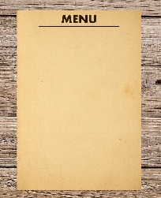
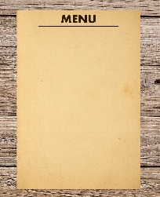
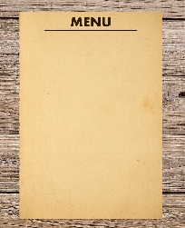

RESTAURACJA 2F

OPIS NASZEJ RESTAURACJI
Ekskluzywa 5 gwiazdkowa restauracja z wybitnymi daniami.
Nasza restauracja jest w Top 10 restauracji w Polsce
od 1985 roku mamy wielu klientów i cały czas wysoki poziom dań.
 
